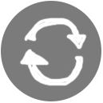
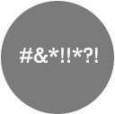

Ход конём Расстановочная лаборотория Светланы Казаковой


Меня зовут Светлана Казакова, и я расстановщик. Тот, который по Хеллингеру. На самом деле я еще учусь, но уже немного вошебник, непрерывно практикую больше года и не собираюсь останавливаться. Клиенты тоже довольны (см. отзывы). Учусь в Центре Современных Системных расстановок в Москве у Елены Веселаго.
Ход конем — моя расстановочная лаборатория. Лаборатория, потому что метод интереснейший, и исследования никогда не прекращаются, а Ход конем, потому что в индивидуальной работе я использую шахматы. Я работаю в группах и индивидуально, в том числе по Skype, живу в Нижнем Новгороде. Моя работа стоит 2000 рублей, но бывают и разные бесплатные «плюшки».
Что такое расстоновки и кому они нужны?
У нас есть сильные привычки, повторяющиеся события в жизни, странные чувства и всякие другие вещи, которых, как кажется нашей логической части, не должно было бы быть. Наше подсознание живет своей жизнью и не считает нужным следовать нашим логическим убеждениям. И у него есть на это свои причины. Эти причины можно постараться раскрыть и дать себе то, чего не хватало.
Расстановки — это такой почти волшебный метод работы с подсознанием. В нем заместители, обычные люди, которых вы впервые видите, могут почувствовать то, что чувствуете вы или ваши близкие, совсем вас не зная. В это можно не верить, а взять и проверить, прийдя на расстановки лично или по Skype.
Темы: личные отношения, семья, родители и дети, одиночество, работа, деньги, профессиональная реализация, здоровье, симптомы, психосоматика, чувства и состояния и т.д.
Лучше всего расстановки работают со странными ситуациями:
-

Повторяющиеся истории
(те-же-грабли):Мне все время попадаются мужчины, которые не хотят серьезных отношений; на каждой новой работе начальство придирается ко мне без видимых причин; каждый раз, когда отношения становятся серьезными, у меня вдруг пропадают все чувства к человеку — и т.д.
-

Нелогичные реакции и чувства:
Мы любим друг друга, но периодически я хочу сбежать, хотя у нас все хорошо; у нас были ужасные отношения, но меня по-прежнему тянет к нему (к ней); я люблю своего ребенка, но слишком сильно злюсь на него, а к младшей такого нет; у меня все есть, чтобы зарабатывать, но что-то останавливает — и т.д.
-
Ситуации выбора:
Старая профессия надоела, а для новой слишком много вариантов; в каком городе мне будет лучше жить; оставаться здесь или принять предложение о работе; жить в этой стране или имигрировать — и т.д.
Новости
3 авг 2016 в 13:20 Друзья, буду в Москве в понедельник 8 августа и могу задержаться на 9-е, если вы хотите от меня расстановок. Можем устроить настоящий расстановочный круг где-нибудь в парке вечером понедельника. Подробнее>>
10 июл в 14:28 Приглашаю принять участие в моем летнем проекте "Расстановки на открытом воздухе": http://vk.com/constellations_air Подробнее>>
7 июл 2016 в 15:29 Я тут решила освободить в себе немного места для вас и интенсивно поработать.
Поэтому скидка: 1500 рублей за расстановку для всех, кто запишется в ближайшие три дня! Сегодня, завтра и послезавтра. Пусть многие успеют :)
Подробнее>>